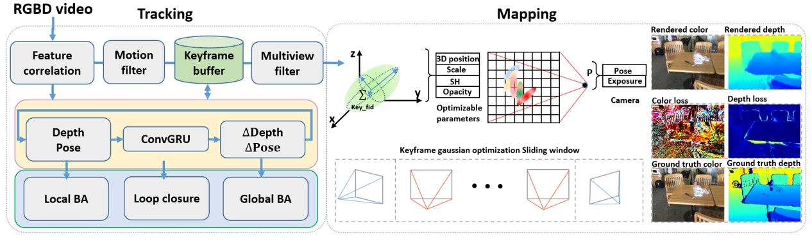
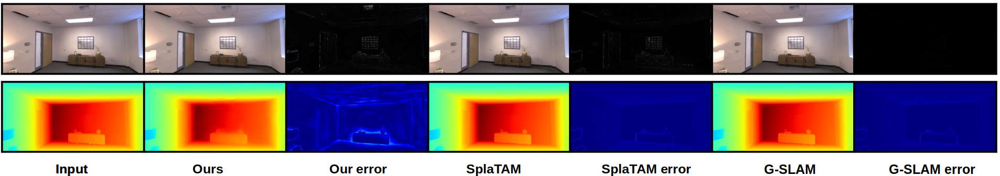
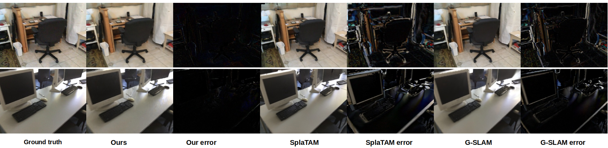
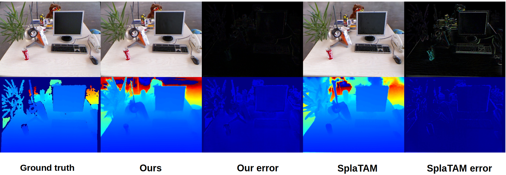

While recent 3D Gaussian Splatting (3DGS) SLAM systems achieve photo-realistic rendering, they suffer from two critical limitations: degraded geometry due to noisy initialization, and suboptimal global optimization caused by heavily entangled tracking and mapping modules. In this paper, we propose GBG-SLAM, a robust dense RGB-D SLAM system designed to overcome these challenges. First, we introduce a depth-prompting module that infers high-fidelity dense depth to initialize and regularize 3D Gaussians, effectively mitigating floating artifacts and irregular shapes. Second, we decouple the tracking and mapping threads by anchoring 3D Gaussians to specific keyframes. This keyframe-indexed representation enables asynchronous global bundle adjustment (BA) and adaptive map updates, alleviating the bottlenecks of traditional map-centric designs. Evaluations on popular synthetic and real-world benchmarks, including Replica, TUM-RGBD, and ScanNet, demonstrate that GBG-SLAM achieves competitive or superior performance on tracking, mapping, and rendering compared to existing state-of-the-art SLAM methods.

The overall pipeline of the GBG-SLAM system. The input RGB-D video stream is first fed into the tracking block. It undergoes feature extraction and correlation with the last keyframe, which is then used for keyframe selection by evaluating the mean optical flow within a motion filter. Selected keyframes are enqueued into keyframe buffers. These buffers explicitly maintain the elements of the pose graph, serving as the foundation for Dense Bundle Adjustment (DBA) operations. To optimize the keyframe depth and pose, the system iteratively updates the current pose G and depth D to fit a renewed flow target Δflow which is updated dynamically by a ConvGRU. The fitting process, carried out by the DBA, is categorized into three types: local DBA, loop closure DBA, and global DBA. These share the same core implementation but are applied to different extensions of the pose graph. In the Gaussian mapping block, a multi-view filter first removes unreliable depth values from the current keyframe. Then, the keyframe's color, depth, and pose are used to initialize Gaussian points in its frustum. Finally, these Gaussians are optimized within a local sliding window of the current keyframe using the combined losses Lcolor, Ldepth, Liso.
Qualitative comparisons on standard datasets (Replica, ScanNet, and TUM).

Replica

ScanNet

TUM
Interactive viewer. Mesh is rendered with non-shading material. Blue represents estimated trajectory, Green represents Ground Truth.
* Use mouse to rotate, zoom, and pan.